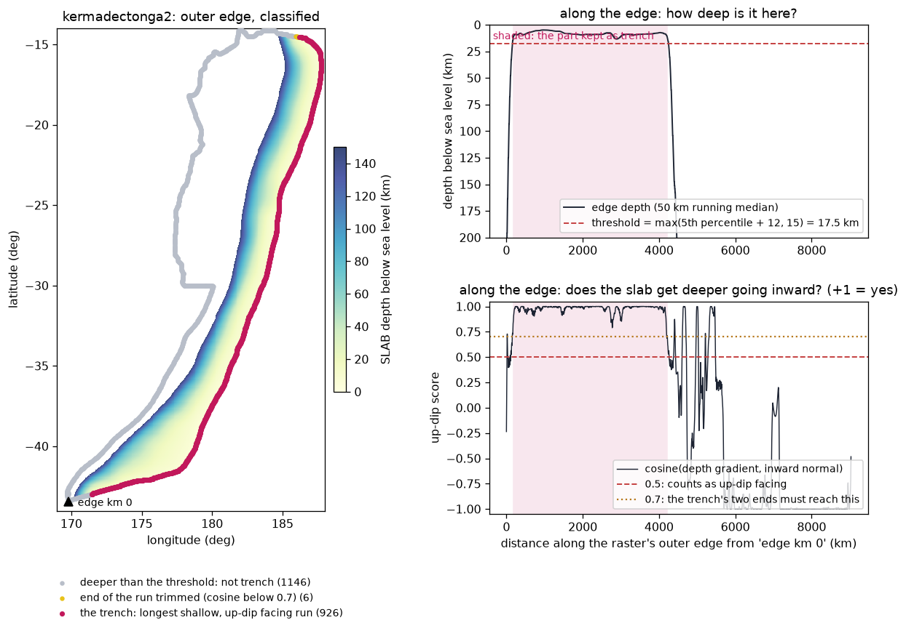
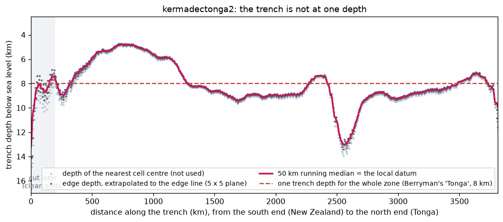
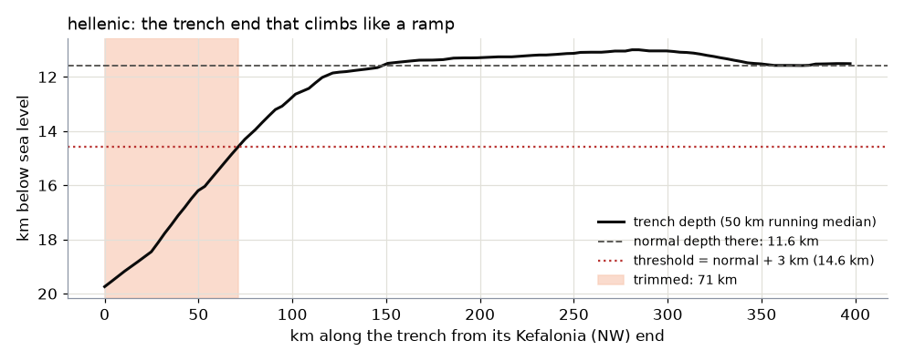
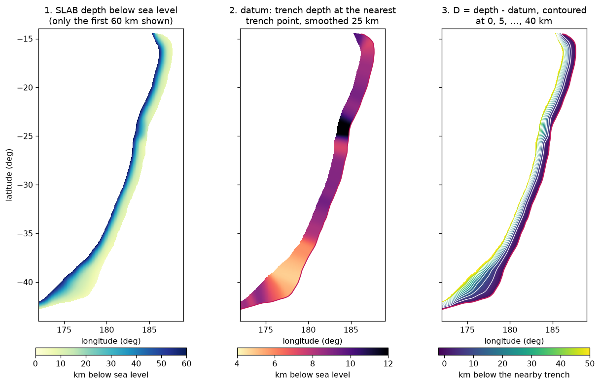
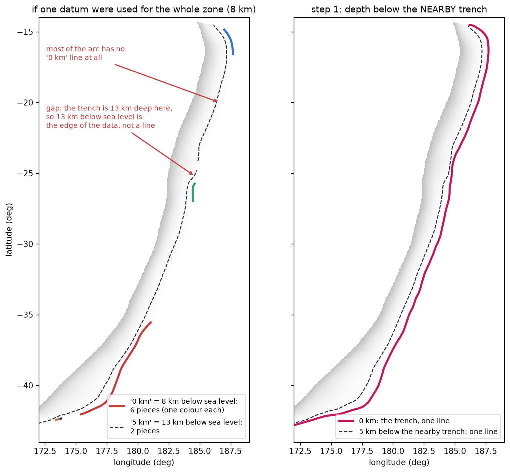
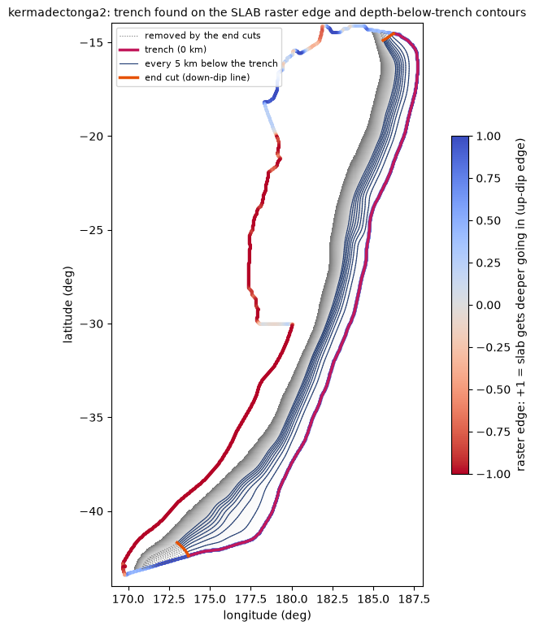

1. Contours from SLAB
Step 1 turns the USGS map of the depth of the sinking plate into the depth lines the rest of the method works with: the trench (0 km) and one line every 5 km below it, down to the depth where large earthquakes stop. "Below it" means below the nearby trench, which changes depth along the zone. This page follows kermadectonga2 through the steps.
At a glance
lib/berryman_params.py; an optional clip window.inputs/geometry/<zone>_slab2_contours.shp (one line per level, column level in km below the trench), figures/step1_trench_and_contours.png, data/step1_contours_info.json.Where in the code: templates/step1_fetch_slab2.py.tmpl (generated as steps/step1_fetch_slab2.py) calls lib/slab_contours.below_trench_contours() and check_contours(). Run it from the repository root with python <folder>/steps/step1_fetch_slab2.py. Its only command-line option is --auto-clip (below); every other setting is a constant at the top of the script (table) or a generate.py option written into it (--clip, --mesh-file).
With --mesh-file
generate.py --mesh-file this step does not use SLAB, and --clip, --auto-clip and the zone's Berryman end points have no effect. It prints that there is nothing to fetch, writes no shapefile and no figure, and only records the mesh file in data/step1_contours_info.json (the single key mesh_file). Step 2 reads the mesh instead. See your own mesh.The SLAB raster
SLAB is the USGS model of subducting plates: for each cell of a regular longitude-latitude grid, the depth of the top of the sinking plate. There are two versions, and step 1 chooses by PTHA18's rule: a zone whose name ends in 2 (kermadectonga2, puysegur2, makran2 ...) uses SLAB2.0 (Hayes et al. 2018; the cell size depends on the region: 0.05 deg for Kermadec, Calabria and the Hellenic arc, 0.02 deg for Puysegur); any other zone (southamerica, kurilsjapan ...) uses SLAB1.0 (Hayes et al. 2012).
- Find or download. The file is named
<prefix>_slab2_dep_*.grdfor SLAB2.0 and<prefix>_slab1.0_clip.grdfor SLAB1.0, where<prefix>is the region's three-letter SLAB code (cal, ker, puy ...). Step 1 looks in this order, skipping any file of zero size: (1) the run's owndata/slab2/ordata/slab1/folder; (2) the sharedptha_python/data/slab2/ordata/slab1/folder. The repository already holds the SLAB2.0 rasters of cal, car, hel, ker, mak, png, puy and sum in the shared folder, so those regions download nothing. If neither folder has the file, step 1 downloads it into the run's own folder, as plain unauthenticated HTTP requests (no account or key): for SLAB2.0 the whole ScienceBase item zip (tens of MB, kept as_<prefix>_sciencebase_item.zip) and the single matching.grdis extracted from it (if that member is empty upstream, the raster is rebuilt from its.xyztwin); for SLAB1.0 the filehttps://earthquake.usgs.gov/static/lfs/data/slab/models/<prefix>_slab1.0_clip.grd. Nothing is ever written to the shared folder automatically. If the host blocks the download, see the manual fallback. - Read. Depth becomes positive downwards, in km below sea level. The log names the product and the file, then the grid. For kermadectonga2:
SLAB product: SLAB2.0 (PTHA18's own naming rule: a zone name ending in '2' used SLAB2.0, this one is 'kermadectonga2'; see ReportPTHA.pdf p.11-12) using depth raster: ptha_python\data\slab2\ker_slab2_dep_02.24.18.grd grid 381 x 601 at 0.05 deg, depth 4.8 to 701.2 km below MSL
When the raster had to be downloaded, the second line is replaced byno cached SLAB2.0 depth raster for region '...' - fetching, followed by the download lines. - Clip (optional,
--clip): cells outside the window are dropped. See --clip. - One block. Only the largest connected block of cells (touching at edges or corners) is kept, so a detached patch can never be taken for part of the zone.
The seismogenic cutoff is the deepest contour: below it the plate is too hot for large earthquakes. It comes from Berryman et al. (2015), the source PTHA18 used: for the zone's dominant segment (ZONE_DOMINANT_SEGMENT in lib/berryman_params.py), the maximum down-dip depth minus the segment's trench depth, rounded up to a multiple of 5 km. kermadectonga2 (segment "Tonga"): 45 minus 8 = 37, so 40 km. calabria2 (segment "Calabria"): 60 minus 4 = 56, so 60 km. Berryman's trench depth is used for this number only: the contours use the measured local trench, and the log prints both. A zone with no Berryman mapping stops step 1 with a message (failures).
TRENCH_ENDS by hand on a raster that uses 0 to 360 longitudes (the Caribbean one), the points, which are usually given in -180 to 180, are converted the same way.If the download is blocked: the manual fallback
ScienceBase (SLAB2.0) sits behind Cloudflare, which sometimes answers scripted requests with HTTP 403 and a "Just a moment..." challenge page; earthquake.usgs.gov (SLAB1.0) can return a 403 from its own firewall. Both blocks are on the server side, can last for hours, and cannot be solved by retrying or by changing the request. Step 1 then stops with a message that already contains the link and the folder below. Get the file in a normal browser, which passes the check, and re-run step 1:
| SLAB2.0 (zone names ending in 2) | SLAB1.0 (all other zones) | |
|---|---|---|
| Where to get it | the region's ScienceBase item, https://www.sciencebase.gov/catalog/item/<item id> (the exact link is in the step 1 docstring and error message), or a search at https://www.sciencebase.gov/catalog/items?q=Slab2+<region title>. Download "all files" (a zip of tens of MB) and extract the single <prefix>_slab2_dep_*.grd member. | https://earthquake.usgs.gov/static/lfs/data/slab/models/<prefix>_slab1.0_clip.grd, or the list of regions at https://earthquake.usgs.gov/data/slab/models.php. |
| File name | any name that starts with <prefix>_slab2_dep_ and ends in .grd | exactly <prefix>_slab1.0_clip.grd |
| Where to put it | <folder>/data/slab2/ (checked first), or the shared ptha_python/data/slab2/ to reuse it in every run of the region | <folder>/data/slab1/ (checked first), or the shared ptha_python/data/slab1/ |
Any HTTP error from ScienceBase other than that 403 is raised as it is. For SLAB1.0, any failed download stops with the same kind of message. If the SLAB1.0 URL itself answers 404 (not a 403), the region may have no SLAB1.0 file at all, and PTHA18's mesh there may be a hand-made profile that this package cannot rebuild. See also Troubleshooting.
What step 1 does, operation by operation
Each row is a problem in the raw SLAB data, what step 1 does about it, and where the full explanation is on this page or on clean ends.
| # | Problem in the raw data | What step 1 does | More |
|---|---|---|---|
| 1 | The raster can hold small detached patches: a neighbouring slab, noise, or a clip window cutting a corner. | Keeps only the largest connected block of cells. | The SLAB raster |
| 2 | SLAB does not say where the trench is. The edge of the data is partly trench, partly the deep end of the model, partly side edges. | Walks the outer edge and keeps the longest run that is shallow and faces up dip. | Finding the trench |
| 3 | The nearest cell centre is up to one cell inside the edge, so its depth reads slightly deep. | Reads the depth at the edge from a plane fitted to the cells around it, then takes a running median over 50 km along the trench. | The trench's own depth |
| 4 | An end of the trench can be the edge of the data, climbing in depth like a ramp, and it would then become the datum of everything near it. | Trims each end, by at most 100 km, while it is more than 3 km deeper than the trench's normal depth there. | The ramp rule |
| 5 | The trench is not at one depth. With one datum for the whole zone, shallow levels do not exist where the trench is deeper. | Gives each cell the depth of its nearest trench point, smoothed with a 25 km Gaussian. D = depth - datum. | The local datum |
| 6 | A raster is not a set of lines. | Contours D every 5 km (0, 5, 10 ...) down to the cutoff. The 0 km line is the trench itself. Each level keeps its longest piece; any other piece longer than 5% of it is reported. | The contours |
| 7 | The zone ends where the data (or the clip window) ends: crookedly, or narrowing to a point. | Cuts the contours along one down-dip line at such an end, or at the two Berryman points where they are given. | Clean ends |
| 8 | A level can be missing, closed, very short, split, or run along the edge of the data. | Stops the run with the reason, so no bad geometry is written. | The checks |
Operations 1 to 8 are in lib/slab_contours.py, called by the step 1 script. What step 2 does with the contours is on step 2.
Finding the trench
SLAB does not say where the trench is. It is part of the edge of the data: the part where the plate is shallowest and gets deeper going inward. The rest of the edge is the deep end of the model or a side edge. Step 1 walks all around the edge of the block and classifies every point:
- Is it shallow? The depth at the edge (nearest cell, 50 km running median) must be at most a threshold: the shallowest 5% of the edge depth plus 12 km, but never less than 15 km. kermadectonga2: threshold 17.5 km.
- Does it face up dip? The large-scale depth gradient (smoothed over 20 km), taken a little inside the edge, must point inward: its cosine with the inward direction at least 0.5 (+1 means straight inward).
- Longest run. The trench is the longest continuous run of points that pass both tests. Gaps shorter than 250 km that are shallow but noisy (flat sediment prisms, as in Calabria) are bridged. Points on a clip window's straight edge are never trench.
- Trim the run's ends until the cosine reaches 0.7: a side edge runs down dip, a trench runs along the zone.
- Ramp rule. Trim each end that climbs in depth like a ramp (below).
- Smooth the line with a moving average 15 km either side, so the cell staircase of the raster edge does not show.

A harder case: Calabria's curved, noisy trench bridging and trimming
The Calabrian trench wraps round a flat accretionary prism, where the gradient is noisy. Many of its edge points fail the up-dip test, but they are shallow and lie in gaps shorter than 250 km, so they are bridged into the trench. The Berryman end cut then trims the Calabrian arc at its two given points (below).
The trench's own depth
The nearest cell centre to an edge point lies up to one cell inside it, where the plate is already a little deeper. So the depth at each edge point is read from a plane fitted to the 5 x 5 cells around that centre, evaluated at the edge point, and then smoothed with a 50 km running median along the trench.

Where in the code: slab_contours.find_trench() (shallow_margin_km=12, updip_cos=0.5, end_cos=0.7, gap_km=250, smooth_km=15), running_median().
The ramp rule: a trench end that climbs like a ramp is not trench
Everything below the trench is measured from the trench nearest to it, so a wrong stretch of trench becomes a wrong datum for its whole neighbourhood. At the Kefalonia end of the Hellenic arc, the up-dip edge of the SLAB2 raster passes both tests above, but it is the edge of the data: its depth climbs, like a ramp, from well below the trench's normal depth to that normal depth. Used as a datum, it would pile the 25-35 km contours of the zone into one line.
So step 1 trims each end back, by at most 100 km, while its 50 km running-median depth is more than 3 km deeper than the trench's normal depth there. The normal depth is the larger of the median of the trench 100 to 200 km in from that end and the median of the whole trench. An end that does not climb is kept as it is.

ramp_trim_km gives on the whole Hellenic raster).On kermadectonga2 the rule trims one end of the trench (the start, about 11 km). The log line is ramp rule (a trench end more than 3 km deeper than the trench's normal depth is not trench): start trimmed by 11 km, end by 0 km, and the amounts are kept in data/step1_contours_info.json as ramp_trim_km.
Where in the code: slab_contours._ramp_trim(), find_trench(ramp_rise_km=, ramp_ref_km=(100, 200), ramp_max_km=100), below_trench_contours(ramp_rise_km=); step 1's constant TRENCH_RAMP_RISE_KM = 3.0 (set it to None to switch the rule off). The rule runs on the raw trench points, before the smoothing. When nothing is trimmed the log says nothing to trim.
Zones that are one part of a SLAB region
Some zones are one part of a larger SLAB raster. The Hellenic arc is run as hellenic_west2 and hellenic_east2, or as the single zone hellenic2. Calabria (calabria, calabria2) and Cyprus (cyprus2) are also parts of a larger raster. For these zones the ends are fixed by Berryman et al. (2015) Table 3.1, which gives each segment's two trench end points. generate.py looks the zone up in ZONE_TRENCH_ENDS and writes the two points into step 1 as TRENCH_ENDS; there is no command-line option for them. Step 1 then works like this:
- The trench, the local datum and the contours are built on the whole raster, so every point is measured from the real nearby trench.
- Every contour is cut along the down-dip line through each of the two end points, which is the line of steepest descent that passes closest to the point.
- The cut is not moved afterwards, even when the end is far from square. The zone is defined by those points.
These zones therefore skip the automatic end cleaning of clean ends at both ends. For calabria2 the Berryman points are 15.775E 37.282N and 17.415E 39.071N, and the cut shortens the trench from 1,050 km (before the cut) to 717 km. The cutoff is 60 km and the contours are 13. The cut is the default for Calabria, not an option. The two Hellenic zones share their midpoint, so they tile with no gap and no overlap. The step 1 figure marks the given points with stars.
To use other end points, or none, edit TRENCH_ENDS in the step 1 script: ((lon, lat), (lon, lat)), or None to go back to the automatic end cleaning of clean ends. These zones have no default --clip window either (ZONE_DEFAULT_CLIP is empty): a vertical clip line would cut through their slab. Before the cut, every level must be one open line; step 1 stops with a ValueError if a level is missing or closed, or if the two points fall on the same down-dip line (failures).
Where in the code: lib/berryman_params.py ZONE_TRENCH_ENDS (keys: hellenic_west2, hellenic_east2, hellenic2, cyprus2, calabria, calabria2); slab_contours.trim_ends(cut_points=). The Berryman end points are written in step 1's TRENCH_ENDS.
Depth below the nearby trench (the local datum)
PTHA18's report (section 3.1) says the source zones were converted into "depth below the nearby trench". Sampling SLAB along PTHA18's published contours shows what that means: a point on the 5 km contour is 5 km deeper than the trench point nearest to it. So each cell gets its own reference depth, its local datum:

Why one depth for the whole zone does not work

Where in the code: slab_contours.depth_below_trench().
The contours
D is contoured at 5, 10, 15 ... km, down to the cutoff. The 0 km contour is not contoured: it is the trench line found above. If a level comes out in several pieces, the longest is kept, and any other piece longer than 5% of it is reported. Then the zone's two ends are examined and, where needed, cut square: see Clean ends.
contours every 5 km below the NEARBY trench (PTHA18's convention):
trench: 3797 km of the raster's 9125 km outer edge; its depth below sea level p5/median/p95 = 5.0/8.5/10.7 km (this is the local datum)
ramp rule (a trench end more than 3 km deeper than the trench's normal depth is not trench): start trimmed by 11 km, end by 0 km
clean ends (an artefact end is cut along a down-dip line; median width 140 km):
start: CUT, the zone narrows to a point there (38% of its median width at the tip): cut where it is back to 70%; trench shortened by 180 km, deeper contours by up to 243 km; the new end is 9 deg off square
end : CUT, its natural end is 72 deg off square: cut along the down-dip line from the trench's last point; trench shortened by 0 km, deeper contours by up to 51 km; the new end is 45 deg off square
trench after the cuts: 3617 km
5.0 km below trench: one line, 3493 km, 848 points
10.0 km below trench: one line, 3435 km, 840 points
...
40.0 km below trench: one line, 3336 km, 822 points
The printed lines are from the kermadectonga2 reference run, with the middle levels left out. The contour spacing is CONTOUR_SPACING_KM = 5.0 in step 1. A level with a second piece prints "ignored N smaller piece(s)", and a closed loop prints a WARNING.

figures/step1_trench_and_contours.png). The SLAB depth in the background, the trench in pink, the contours in dark blue, the parts removed by the end cuts dotted, and the cut lines in orange. Look at it after every run: it shows at once whether the trench was found in the right place and whether the ends look reasonable.The checks that stop a run
Before writing anything, step 1 checks the contours and stops, with the reason, if any of these is true:
| Check | What it means |
|---|---|
| a level between 5 km and the cutoff is not in the raster at all | the SLAB model stops shallower than the cutoff |
| a level is shorter than 30% of the level above it (for the 5 km level, the trench) | the model stops at that depth along most of the zone (compared level by level, because a zone may narrow gradually with depth) |
| a level is a closed loop | not a depth line across the zone |
| a level has a second piece longer than 10% of the main one | a gap in the model or a clip window breaks it; keeping only the longer piece would silently shorten that level |
| more than 5% of a level's interior runs along the edge of the data | the raster stops at that depth there, so the line is the edge of the model, not a real contour |
Where in the code: slab_contours.check_contours(). The end cleaning runs only when every level was found and none is closed.
--clip: using part of a raster
Some SLAB regions cover more than one subduction zone: the "Caribbean" raster includes the Lesser Antilles, Puerto Rico and Hispaniola. --clip LON_MIN,LON_MAX,LAT_MIN,LAT_MAX keeps only that window of the raster, before anything else is done. Longitudes are in the raster's own convention (0 to 360 for this one). For example, --clip 297,307,5,18.5 keeps the Lesser Antilles and nothing of Puerto Rico. generate.py accepts exactly four numbers with LON_MIN < LON_MAX and LAT_MIN < LAT_MAX and stops otherwise. The window is written into the step as CLIP_BBOX (you can also edit it there and re-run step 1) and recorded in data/step1_contours_info.json as clip_bbox. The log prints CLIP_BBOX = (...) (lon_min, lon_max, lat_min, lat_max): only this window of the raster is used. With --mesh-file it has no effect.
--auto-clip: the window derived from the mesh
One clip case needs no coordinates from you. When step 3's plate-boundary check finds that the mesh runs past the end of its own subduction zone onto the next one, it records which along-strike columns are involved and the lon/lat box of the columns that remain. --auto-clip uses that box:
python <folder>/steps/step1_fetch_slab2.py --auto-clip python <folder>/steps/step_total.py --auto-clip # and re-runs everything
It needs one ordinary run first, because the finding is made from the mesh: run the pipeline, read the report, then re-run with --auto-clip. It replaces any CLIP_BBOX already set in the step for that run (the constant in the file is not changed, but the shapefile written is the clipped one, which the later steps use), and it stops with an explanation when there is no finding, or when a lon/lat box cannot separate the flagged columns from the rest of the arc. The finding is read from data/plate_boundary_change.json, which step 3 writes. The detection rule is in step 3. With --mesh-file the option has no effect.
The step_total.py --auto-clip form also regenerates the input JSON (it passes --force to step 6), so any hand edit to that JSON is lost. Edit the JSON again after the run if needed.
Constants at the top of the step 1 script
Everything generate.py sets for step 1 is a constant at the top of steps/step1_fetch_slab2.py. You can edit them and re-run step 1. The mesh and everything after it must then be redone in order: step 2, step 3, step 5, step 6 with --force (step 6 keeps an existing input JSON otherwise, and the JSON holds one convergence value per mesh column), then step 7 onward. step_total.py runs all steps in order, but it passes --force to step 6 only with --auto-clip, so delete the input JSON first if you use it after such an edit.
| Constant | Value | What it does |
|---|---|---|
PTHA18_ZONE_NAME, SLAB2_PREFIX, SCIBASE_ITEM | the zone, the three-letter SLAB prefix, the ScienceBase item id | choose the SLAB product (zone name ending in 2 is SLAB2.0), the raster file name and the download. Set by generate.py from the region and zone you gave. |
CONTOUR_SPACING_KM | 5.0 | spacing of the contours below the trench (PTHA18 used 5 km). It sets only the contour set; the number of down-dip rows is decided in step 2. |
CLIP_BBOX | None, or (lon_min, lon_max, lat_min, lat_max) | the --clip window, in the raster's own longitudes. |
TRENCH_ENDS | None, or ((lon, lat), (lon, lat)) | the Berryman end points of a zone that is one part of a SLAB region (above); set for hellenic_west2, hellenic_east2, hellenic2, cyprus2, calabria and calabria2. |
TRENCH_RAMP_RISE_KM | 3.0 | the ramp rule's threshold (above); None switches the rule off. |
MESH_FILE, MESH_DEPTH_UNITS | None, 'auto' | set by --mesh-file and --mesh-depth-units. With a mesh file, step 1 does nothing else (above). |
PLATE_CHANGE_JSON | data/plate_boundary_change.json | where --auto-clip reads step 3's finding. |
RAW_DIR, GEOMETRY_DIR, FIGURES_DIR, OUT_SHP, OUT_INFO | data/slab2, inputs/geometry, figures, the shapefile, the JSON | the folders and the two output files (below). |
How close to PTHA18's contours
PTHA18 drew its contours by hand. This code draws them from the SLAB raster by the rules above, so its lines differ from PTHA18's, and the mesh cells differ with them. The official contour files and meshes are needed for a direct comparison; see the official data.
Why the trench line sits a little seaward of PTHA18's
Step 1 traces the trench on the outer boundary of the valid SLAB cells, which lies half a cell beyond the last cell centres: about 2.8 km for 0.05 deg cells (1.1 km for puysegur2's 0.02 deg cells). PTHA18's 0 km line lies on the edge cells themselves. On a real map both lines follow the trench.
What step 1 writes, and the JSON keys
| File | What it holds |
|---|---|
inputs/geometry/<zone>_slab2_contours.shp (with its usual companion files) | one line per level, in the column level: km below the trench (0 is the trench). Step 2 reads this file. |
figures/step1_trench_and_contours.png | the raster in grey, the raster's outer edge coloured by up-dip score, the trench (pink), the contours (dark blue), the parts removed by the end cuts (dotted), the cut lines (orange) and the given end points (stars, for Berryman zones). |
data/step1_contours_info.json | the numbers of this step, listed below. |
data/slab2/ or data/slab1/ | the raster, when step 1 downloads it, and for SLAB2.0 the item zip. |
The console log also prints the extent of the written contours (extent: lon ... to ... (unwrapped, so values above 180 are west of the antimeridian) and the latitude range) and ends with Next: step2_build_grid.py.
data/step1_contours_info.json has these keys, in this order (the same set on every SLAB run, for example the kermadectonga2 and calabria2 reference runs):
zone,raster(the file used, relative to the repository root),clip_bbox(null or a list of 4 numbers),trench_ends(null, or the two[lon, lat]points, in the raster's longitude convention).trench_ramp_rise_km(3.0, or null when the rule is off),ramp_trim_km(the start and end trims, km, as a list of 2 numbers).cutoff_km_below_trench,berryman_dominant_segment,berryman_trench_depth_km(for reference only).contour_spacing_km,trench_length_km(after the end cuts),trench_length_untrimmed_km(before the end cuts, after the ramp trim).trench_depth_below_msl_km:p5,median,p95(the local datum, before the end cuts).levels: one entry per contour from 5 km to the cutoff (the 0 km trench has none), withlevel,found, and for a found levelextra_pieces_km,closed,length_km,n_pointsandedge_fraction(the share of the level's interior within 1.5 cells of the edge of the raster). A level that is not found has onlylevelandfound.ends:startandend, each withcut(true or false),trench_kmandcontours_km(removed, 0 when kept),reason(the sentence in the log),tip_width_ratio(null for a given point),deviation_deg(before the cut),deviation_after_deg(null when the end is kept); a given-point cut also haspointandpoint_distance_km.endsis null when the end cleaning did not run (it needs every level found and none closed) or found no complete down-dip line, and is{"skipped": "reason"}when a cut could not be applied.
In a --mesh-file run the file holds only the key mesh_file.
When step 1 stops
| What happens | Why, and what to do |
|---|---|
| the raster is not found and the download is blocked | the message gives the manual link and the folder; save the file there and re-run (the manual fallback). See Troubleshooting. |
| "expected one <prefix>_slab2_dep_*.grd, got [...]" | the downloaded ScienceBase zip does not hold exactly one matching .grd; check the zip, or extract the right file by hand into data/slab2/. |
| "has no Berryman et al. (2015) segment mapping" | no seismogenic cutoff exists for the zone; add its mapping in lib/berryman_params.py (ZONE_TO_BERRYMAN_SEGMENTS and ZONE_DOMINANT_SEGMENT). |
| "no trench-like (shallow, up-dip facing) edge found on the raster boundary", or "the trench-like edge vanished after end trimming" | no part of the raster's outer edge passes the trench tests, or what passes is shorter than 3 points once its ends are trimmed; check the raster, or the --clip window. |
| "step 1 cannot build a valid contour set" with a list of problems | one of the checks failed; nothing is written. Look at the figure in figures/ if it exists from an earlier run, and at the clip window. |
a ValueError about trench_ends | for a zone with given end points, every level must be one open line before the cut ("every level must be one open line before the cut"); a missing or closed level stops the step. So does a cut that cannot be applied ("the cut could not be applied", with the reason: for example "the two end points fall on the same down-dip line", or no complete down-dip line). For the automatic end cleaning a cut that cannot be applied does not stop the step: the log says clean ends: NOT applied (reason) and the contours are kept uncut. |
--auto-clip stops with an explanation | step 3 has not run on this mesh yet, found nothing to cut, or the flagged columns cannot be separated by a lon/lat box; use an explicit --clip instead. |
Results on kermadectonga2 and calabria2
These are the numbers from the reference runs of two examples. To reproduce them, generate the zone (--ptha false is the default) and run step 1; the numbers are in data/step1_contours_info.json in its folder.
| Zone | SLAB | Cutoff | Contours | Trench before / after the end cuts | Trench depth p5 / median / p95 |
|---|---|---|---|---|---|
| kermadectonga2 | 2.0 | 40 km | 9 | 3,797 / 3,617 km | 5.0 / 8.5 / 10.7 km |
| calabria2 (with its Berryman points) | 2.0 | 60 km | 13 | 1,050 / 717 km | 6.2 / 11.1 / 12.1 km |
The decision taken at each end is on the clean ends page.